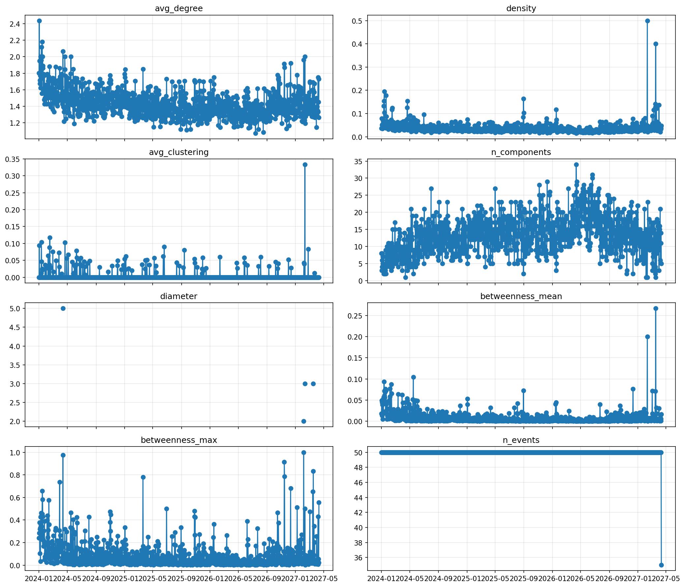
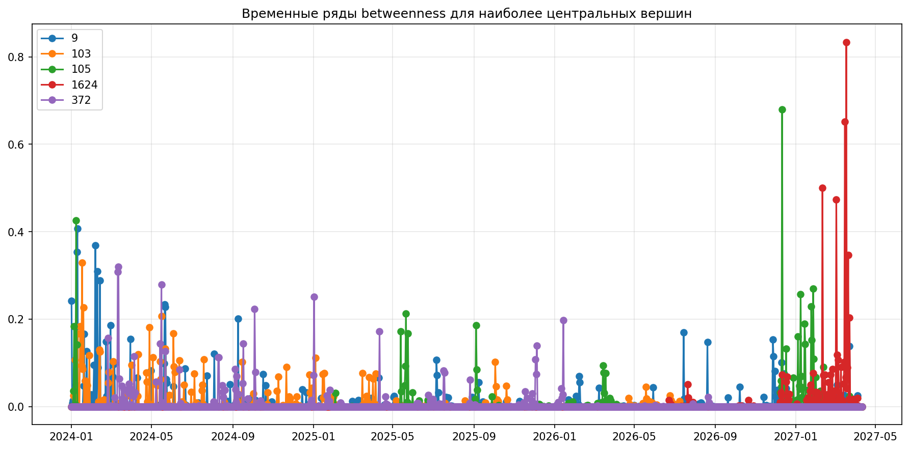
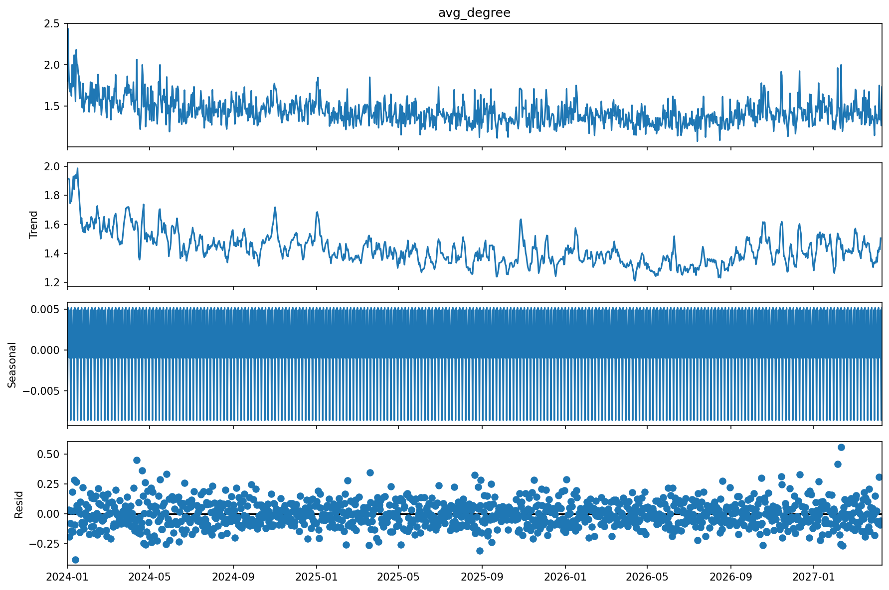
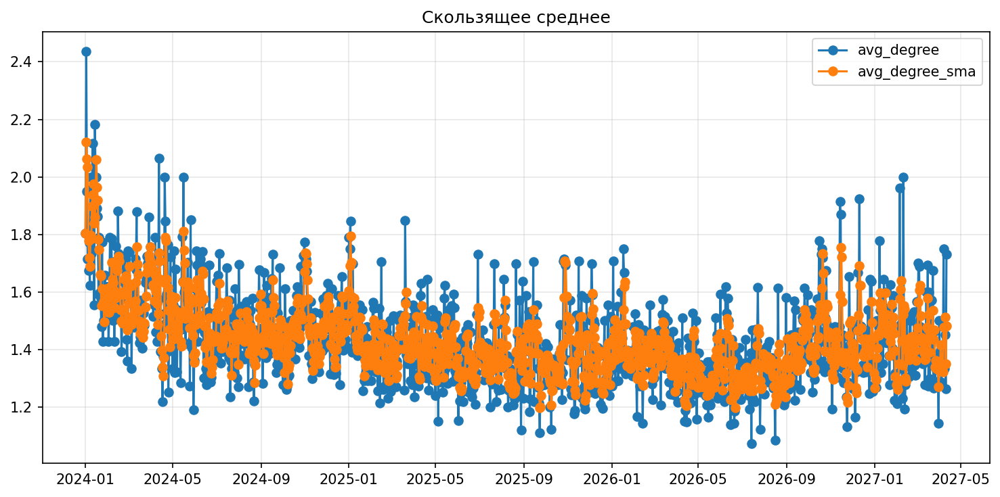
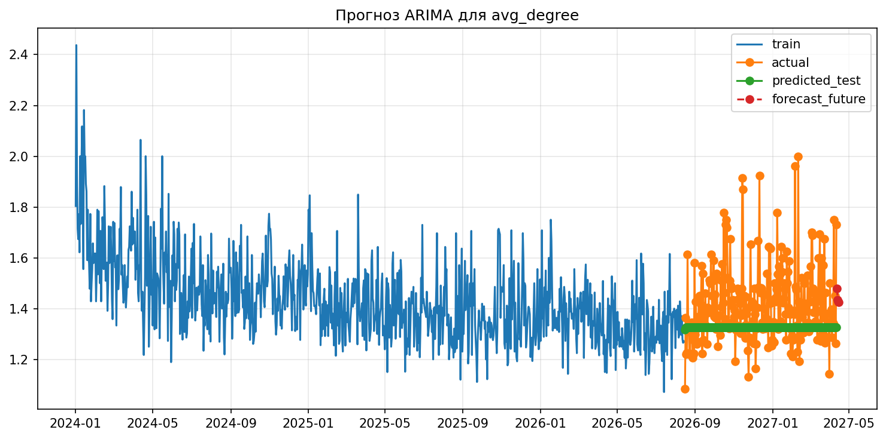

1. Цель работы
2. Краткое теоретическое обоснование
3. Описание данных
4. Этапы анализа
5. Результаты и их интерпретация
6. Выводы
7. Ответы на контрольные вопросы
Целью лабораторной работы является исследование динамических графов и временных рядов на реальном датасете взаимодействий между узлами, построение графов по временным окнам, расчёт графовых метрик, представление их в виде временных рядов, а также выполнение анализа стационарности, декомпозиции и прогнозирования.
Динамический граф представляет собой сеть, структура которой меняется во времени. Для его анализа удобно использовать поток событий с временными метками, из которого строятся отдельные графы-снимки для последовательных временных окон. Это позволяет отслеживать изменение степени связности, плотности, кластеризации, числа компонент и роли отдельных узлов в структуре сети.
Временные ряды позволяют анализировать поведение таких характеристик во времени. К основным задачам относятся визуализация, проверка стационарности, выделение тренда и сезонности, а также прогнозирование. В данной работе использовались тест Дики–Фуллера, аддитивная декомпозиция, скользящее среднее и ARIMA.
В работе использован реальный датасет CollegeMsg из SNAP. Он содержит направленные события обмена сообщениями между пользователями университетской сети. Набор включает 59,835 событий между 1,899 узлами за период с 15.04.2004 по 26.10.2004.
В отличие от примера, где данные делились по фиксированному числу событий, в выполненной работе временная шкала была разбита на равные интервалы по 7 дней. Это соответствует условию лабораторной работы и позволяет корректно рассматривать графовые метрики как временные ряды с регулярным шагом.
Датасет был загружен из файла /Users/rhktrlwmd/Documents/New project/data/raw/CollegeMsg.txt.gz. UNIX-временные метки преобразованы в формат datetime, события отсортированы по времени, а затем сохранены в таблицу обработанных данных.
Для каждого недельного окна строился отдельный граф. Были сформированы как неориентированные, так и ориентированные графы, что позволило отдельно проанализировать общую связность и отношение входящих и исходящих степеней.
Для каждого окна рассчитывались средняя степень вершины, плотность, средний коэффициент кластеризации, число компонент связности, диаметр при условии связности графа, а также средняя и максимальная центральность по посредничеству. Для ориентированной версии графа дополнительно вычислялось среднее отношение in/out степеней.
Полученные метрики были представлены как временные ряды. Для ряда avg_degree выполнены визуализация, тест Дики–Фуллера, декомпозиция, сглаживание скользящим средним и прогнозирование при помощи модели ARIMA(1,1,1). Отдельно был проанализирован временной ряд центральности по посредничеству для вершины-лидера.
В работе дополнительно выполнены все задания: использован реальный датасет, рассчитана центральность по посредничеству для каждой вершины, оценена корреляция между avg_degree и n_components, построен прогноз ARIMA с проверкой на тестовой выборке, а также исследована стационарность отношения in/out степеней в ориентированном графе.
После разбиения временной шкалы на окна по 7 дней было получено 28 окон. Среднее значение avg_degree составило 2.9706, минимум — 1.3714, максимум — 7.5646. Средняя плотность графа равна 0.0119, а среднее число компонент связности — 16.5714.
Диаметр не удалось вычислить ни в одном окне, так как граф оставался несвязным на всём периоде наблюдения. Это указывает на выраженную фрагментацию реальной коммуникационной сети. Среднее значение коэффициента кластеризации равно 0.0219, что говорит о слабой выраженности устойчивых триад в большинстве окон.
Среднее значение in_out_ratio_mean для ориентированного графа составило 0.8953. Корреляция между avg_degree и n_components равна -0.8042202472735333, то есть является сильной отрицательной. Это означает, что по мере роста числа связей граф становится менее фрагментированным.
Топ-5 окон по средней степени вершины:
| window_id | time_start | time_end | avg_degree | density | n_components |
|---|---|---|---|---|---|
| 3 | 29.04.2004 | 06.05.2004 | 7.5646 | 0.0124 | 4 |
| 4 | 06.05.2004 | 13.05.2004 | 6.8658 | 0.0087 | 2 |
| 6 | 20.05.2004 | 27.05.2004 | 6.4058 | 0.0072 | 11 |
| 5 | 13.05.2004 | 20.05.2004 | 6.0564 | 0.0081 | 6 |
| 2 | 22.04.2004 | 29.04.2004 | 5.5413 | 0.0148 | 2 |
Топ-5 вершин по средней центральности по посредничеству:
| node | mean_betweenness |
|---|---|
| 1624 | 0.067281 |
| 9 | 0.057146 |
| 105 | 0.054554 |
| 1713 | 0.052062 |
| 249 | 0.038244 |
Тест Дики–Фуллера показал, что ряд avg_degree является стационарным: p-value = 0.03770705558213111. В то же время ряд in_out_ratio_mean нестационарен: p-value = 0.9975619362820367. Аналогично, временной ряд центральности по посредничеству для наиболее значимой вершины также оказался нестационарным.
Качество модели ARIMA на тестовой выборке: MAE = 0.35390919409995986, RMSE = 0.38536307515387885. Модель корректно отразила общий нисходящий тренд, но на тестовых точках давала заметное завышение фактических значений.
Сравнение факта и прогноза ARIMA:
| time | actual | predicted | abs_error |
|---|---|---|---|
| 23.09.2004 | 1.9865 | 2.0867 | 0.1002 |
| 30.09.2004 | 1.8136 | 2.0704 | 0.2568 |
| 07.10.2004 | 1.6174 | 2.0739 | 0.4565 |
| 14.10.2004 | 1.6190 | 2.0732 | 0.4541 |
| 21.10.2004 | 1.5714 | 2.0733 | 0.5019 |
Прогноз на несколько шагов вперёд:
| time | forecast |
|---|---|
| 28.10.2004 | 1.4344 |
| 04.11.2004 | 1.4634 |
| 11.11.2004 | 1.4572 |
| 18.11.2004 | 1.4585 |





В ходе выполнения лабораторной работы был проведён анализ динамики структуры реальной сети взаимодействий. Установлено, что по мере развития наблюдаемого периода сеть становилась более разреженной: средняя степень и плотность снижались, а число компонент связности возрастало.
Коэффициент кластеризации оставался низким, следовательно устойчивые локальные группы выражены слабо. Сильная отрицательная корреляция между avg_degree и n_components подтверждает, что увеличение числа связей уменьшает фрагментацию сети.
Тест Дики–Фуллера показал стационарность ряда avg_degree, но нестационарность ряда отношения входящих и исходящих степеней и ряда центральности вершины-лидера. Модель ARIMA дала приемлемый прогноз по общему тренду, однако без высокой точности на тестовой выборке.
Динамический граф — это граф, структура которого меняется во времени: появляются и исчезают рёбра, а иногда и вершины. В данной работе граф задаётся потоком событий вида `source, target, timestamp`, а затем для каждого временного окна строится отдельный снимок сети.
Основные варианты представления в памяти:
1. Последовательность снимков графа по окнам времени.
2. Список событий или рёбер с временными метками.
3. Единый граф с временными атрибутами у рёбер и вершин.
4. Многослойный граф, где каждый слой соответствует отдельному моменту или интервалу времени.
Для лабораторной удобнее всего хранить исходные события, а затем агрегировать их в окна фиксированной длины.
Для анализа динамики сети особенно полезны:
1. Средняя степень вершины.
2. Плотность графа.
3. Средний коэффициент кластеризации.
4. Число компонент связности.
5. Диаметр.
6. Центральность по посредничеству.
7. Для ориентированных графов — входящие и исходящие степени, а также их отношение.
В этой работе наиболее показательными оказались `avg_degree`, `n_components`, `density` и `betweenness`, потому что именно они лучше всего отражали укрупнение и распад компонент, а также появление узлов-посредников.
Стационарность проверяют визуально и статистическими тестами. На практике чаще всего используют:
1. Тест Дики–Фуллера.
2. Анализ поведения среднего и дисперсии на разных участках ряда.
3. Графики автокорреляции и частной автокорреляции.
4. Анализ тренда и сезонности после декомпозиции.
Это нужно, потому что многие модели прогнозирования, включая ARIMA, предполагают стабильность статистических свойств ряда. Если ряд нестационарен, модель может давать смещённый прогноз.
Тест Дики–Фуллера проверяет гипотезу о наличии единичного корня.
1. Нулевая гипотеза `H0`: ряд нестационарен.
2. Альтернативная гипотеза `H1`: ряд стационарен.
Интерпретация:
1. Если `p-value < 0.05`, нулевая гипотеза отвергается, ряд считают стационарным.
2. Если `p-value >= 0.05`, оснований отвергнуть нестационарность нет.
В моём эксперименте ряд `avg_degree` оказался стационарным (`p = 0.0377`), а `in_out_ratio_mean` и временной ряд центральности вершины `1624` оказались нестационарными.
Аддитивная модель:
`Y(t) = Trend(t) + Seasonality(t) + Residual(t)`
Она подходит, когда амплитуда сезонных колебаний примерно постоянна.
Мультипликативная модель:
`Y(t) = Trend(t) * Seasonality(t) * Residual(t)`
Она подходит, когда амплитуда сезонности зависит от уровня ряда.
В лабораторной использовалась аддитивная модель, так как для выбранных графовых метрик её интерпретация проще и устойчивее.
Основные методы:
1. Скользящее среднее.
2. Экспоненциальное сглаживание.
3. AR, MA, ARMA, ARIMA, SARIMA.
4. Prophet.
5. Регрессионные модели с временными признаками.
6. Нейросетевые модели: RNN, LSTM, трансформеры.
В лабораторной использовались два подхода:
1. Скользящее среднее для сглаживания ряда.
2. ARIMA для прогноза на несколько шагов вперёд и сравнения с фактическими значениями.